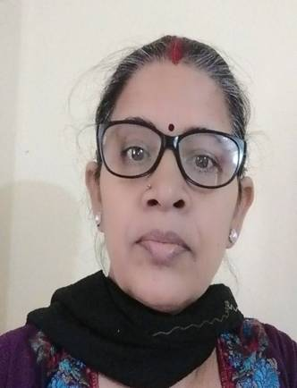

विदेह प्रथम मैथिली पाक्षिक ई पत्रिका

कल्पना झा, दिल्ली
"सुच्चा संपादक, रमानन्द झा रमण"
संपादक शब्द हमरा बड़ प्रिय लगैत रहल सभ दिन।
जहिया सँ नेनपन छोड़ि बोधगरक पाँति दिश ठाढ़ हेबाक उपक्रम मे लगलहुँ तहिये सँ किछु शब्द बड़ आकर्षित करैत आबि रहल अछि। जाहि मे संपादक पहिल पायदान पर रहल। तकर कारण यएह जे लिखब किंवा लिखबाक उपक्रम मे नेना सभकेँ बहुत तरहक अनुभव होइत छैक। जेना नेनपन मे सभसँ पहिने अपन पाठ्यक्रमक प्रश्नोत्तरे लिखब, कोनो कविता कंठस्थ कए लिखब। चाहे जे किछु लिखब, त्रूटि निश्चित हेतैक। आ जँ त्रुटि भेलैक त' सभसँ पहिने अभिभावक लोकनिक डाँट-फटकार आ उनका-ठुनका ओकरा बाद कक्षा मे मास्टर साहेबक छड़ी! बापरे बाप अखनो मोन पड़ैत अछि त' हे भगवान!
हमरा जतबा जनतब छल ओहि अनुरूपे एकमात्र संपादके टा एहन देवतुल्य महानायक छथि जिनका हाथमे जादूक छड़ी होइत छैन्ह। ओहि छड़ीमे बड़-बड़ गुण होइत छैक। ओ जादूक छड़ी बिना कोनो तरहक लक्षणा-व्यंजना किंवा अहाँक मनोभावक लतखुर्दन केने अहाँक प्रत्येक रचना केँ संशोधित क' ओकरा पढ़वा आ छपबा योग्य बना दैत छथि। आ एतबा भान होइते हमर रुचि लेखन दिश अग्रसर भेल। परंच सभसँ पैघ समस्या जे ई संपादक नामक भगवान भेटताह कतय? सरिपहुँ आजुक समय मे नीक संपादक भेटब भगवानेक साक्षात्कार त' छियैक!
हमरा नजरिये रामानन्द रमणजी मे आनो बहुतरास गुण छैन्ह परंच संपादनक काज सभसँ उत्कृष्ट करैत छथि। हमरा मोन अछि सन 2015 मे हम स्त्रीविमर्श पर किछु काज करैत रही, बहुत तरहक समस्या सभ पर मंथन करैत रही। किछु आस-पड़ोस, किछु दूर-दराज किछु सखा-वन्धु-वान्धवक आ सभसँ बेसी स्वयं केर अनुभव पर बेसी गहींर दृष्टि रहैत छल कारण स्त्री विमर्श जँ लिखि रहलहुँ अछि त'ओ पूर्ण रूपेण कसौटी पर कसल हेबाक चाही नहि कि काल्पनिक। तखने कोनो सामाजिक सरोकार संबंधित काज भ' पाओत। हम एकगोट आलेख लिखने रही " स्त्रीक मोनमे असुरक्षाक भावना कियेक?" हमर हार्दिक इच्छा छल जे ओ आलेख कोनो नीक संस्थाक स्मारिका मे छपय परंच नहि जानि कियेक हम जाहि संस्थाक स्मारिका हेतु पठौलहुँ ओ तथाकथित संपादक लोकनि हमरा आलेख केँ अस्वीकृत क' देलैन्ह। तखन हम ओकरा घर-बाहर मैथिली पत्रिका हेतु पठौलहुँ। जतय ओ छपबो कएल आ एकगोट उत्कृष्ट सीख सेहो प्राप्त भेल ओ ई जे समुचित संपादन की थिकै? बड़ आनन्दित भेल रही ई देखि जे जतय आलेख लिखबाक क्रम मे शब्द संचय केर प्रक्रिया पर लोक बेसी ध्यान नहि दैत छैक ताहि क्रममे एक पैराग्राफक गप मात्र एक वाक्य मे कोना समेटल जा सकैछ? आ' से सिखौलन्हि रमणजी "औंटि रहल छलाह"। हँ यएह थिकै ओ वाक्य। सुच्चा मैथिलीक एहन अनमोल वाक्य रहरहाँ नहि भेटैत छैक, ओ त' कोनो पोथीक बोनमे रहनिहार पढ़ुएबाबू टाक मूँहें सुनबा - पढ़वा लेल भेटत!
सुच्चा संपादक केर मूल कार्य त' यएह भेलैक किने?
सरिपहुँ रमणजी सर मे हमरा नजरिये एकगोट सुच्चा संपादकक सभटा गुण विद्यमान छैन्ह। हमरा हिनकामे सुच्चा संपादकक गुण कोना नजरि आएल ओ अहूँ लोकनि क्रमवार देखल जाउ - सभसँ पहिने त' ओ जतबा महत्वपूर्ण स्थापित लेखक केँ मानैत छथि ततबे नवोदित लेखक केँ सेहो मानैत छथि।ओ संपादक रूपें लेखक केँ सिखेबा आ जगेबाक कार्य करैत छथि। ओ कोनो रचना केँ मात्र प्रशंसा लेल नहि छापैत छथि, ओकर गुण- दोष दुनू परखैत छथि। आजुक स्वार्थी युगमे जतय लोक सिर्फ अपना हेतु जीबैत अछि, साहित्यिक गतिविधि मे भिन्न - भिन्न भाँतिये गोधियाँगिरी मे लागल रहैत अछि। ताहि समयकाल मे कतोक कटुवचन सुनैत अपन कर्तव्यपथ पर अडिग ठाढ़ भेटैत छथि रमणजी ।
जतबाक सम्मान दिवंगत साहित्यकार केँ अवतरण दिवसक श्रद्धांजलि दैत मोन पारैत छथिन्ह ततबे प्रत्येक नव-पुरान साहित्यकार सभक लेल, सभक जन्मदिनकेँ अनमोल, अविस्मरणीय बनबैत - जुग-जुग जीबाक आशीष नेने सदैव उत्साहवर्धन करैत, निरंतर श्रृजनशील रहबाक नव बाट देखबैत छथिन्ह । सरिपहुँ यएह सभ गुण हुनका विशेष बनबैत छैन्ह। आब चर्चा करैत छी हुनक अनमोल थाती केर -
मोन पड़ैत अछि रमण सर केर "अर्काइव" हँ ठीक सुनलियैक! हुनका घ'रमे एकगोट पूर्ण समृद्ध अर्काइव सेहो छैन्ह।जे देखबाक लोभ त' हृदयमध्य अछिये।
हम अखन तक दू बेर चेतना समितिक कार्यालय गेलहुँ अछि। ओहिठामक विद्वजनक दर्शनार्थ! आ से भेलो मुदा मोनक एकगोट कोनमे इहो जिज्ञासा छल जे आदरणीय रमणजी सर सँ भेंट होइत आ गपशपक क्रममे हुनक सुच्चा मैथिलीक शब्द सभ साक्षात हुनकहि मूँहें सुनबाक अवसर भेटैत, परंच कोनो एहन परिस्थिति उपस्थित नहि भ' सकल आ दर्शनक लिलसा लागले रहल अछि अखन धरि। कतोक गोटेक मुँहें हुनका घ'र स्थित अर्काइवक प्रसंशा सुनने छी। हुनक लिखल कृति सभसँ स्वतः स्पषट होइत अछि जे कोनो व्यक्तिक कृति आ साहित्यिक आनो-आन रचना केर तथ्यात्मक स्पष्टता ओकर गूढ़ता निश्चित रूप सँ हुनका हुनक एहि अर्काइव नामक थातियेक माध्यम सँ हेतैन्ह। आब अबैत छी हुनक कृतित्व दिस। लेखन आ संपादनक एतेक वृहत्तर कार्य केयो सहजहि कहाँ क'सकैछ ।ओहि लेल पूर्ण निष्ठा, लगन आ धैर्यक संग-संग साधन सेहो अनिवार्य रहैत छैक। जे साधन एकगोट अर्काइवक रूपमे हुनकहि प्रयत्ने हुनका उपलब्ध छैन्ह। जकर सभसँ सुखद परिणाम एसकर हुनकहि लेल शुभ फलदायी नहि अपितु समस्त मैथिली साहित्य आ' साहित्य प्रेमी लेल छैक। मैथिली साहित्यक कतोक पुरना पोथी सभ जे हमरा लोकनिकेँ पूर्वजक आशीषक रूपमे प्राप्त भेल अछि से हिनके कर्मठताक प्रसाद थिक।
पहिने गप करैत छी हुनक संपादित पोथीक - आदरणीय रमण जी अखन तक लगभग 54 गोट पोथीक संपादन केलैन्ह अछि परंच सभसँ महत्वपूर्ण जे किछु लेखकक पोथीकेँ पुनर्जन्म देलैन्ह अछि। अर्थात हुनक अनुपलब्ध दुर्लभ पोथीक संपादन क' मैथिली साहित्यिक भंडार भरैत वर्तमान आ' आगत पीढ़ीक लेल हेराएल, भोथियाएल साहित्य सुलभ करौलन्हि अछि। एकरा अलाबो साहित्य संवर्धन हेतु बहुत रास काज केलैन्ह अछि।
हिनक लेखन कार्य कहिया प्रारंभ भेलैन्ह ताहि समय केर कोनो निस्तुकी जनतब हमरा नहि अछि परंच हिनक संपादनमे पहिल पोथी सन 1978 मे "मैथिलीक आरंभिक कथा" नाम सँ अधीत प्रकाशन रानीघाट पटना सँ प्रकाशित छैन्ह। एहिसँ स्पष्ट होइछजे एहिसँ पूर्वहि सँ हिनक लेखन कार्य प्रारंभ भ' चुकल छलैन्ह। पुनः अध्ययन कालक दौड़ान सन 1982 मे मूल लेखनक पहिल पोथी "नवीन मैथिली कविता" आ' सन 1993 मे "मैथिली नव कविता" नामक दोसर पोथी प्रकाशित होइत छैन्ह।जे मूलतः शोधपत्र छैन्ह । ओकरा बादक गप की कहू! हिनक मूल आ' सम्पादित जतबा पोथी आदरणीय धाराप्रवाह लिखि देलन्हि ततबा नामो लिखबामे हमरा अशोकर्ये भ' रहल अछि।हम सिर्फ एतबाक कहब जे हुनक ई निरंतरता संप्रति मूल, संपादित, अनुवाद, बीजभाषण, विभिन्न कार्यशाला आदिक रूपें अविराम जारी छैन्ह।
आहिरौ बा! हुनक कृतित्व पर हम लुक्खियो प्रयास कोना करब? हम एतेक लापरवाह प्राणी छी जे जनिकर संपादनक मुरीद छी तनिकर कोनो कृति अखन धरि पढ़बे नहि केलहुँ। ओ कहैत छैक ने एकगोट कहबी - प्रात होयत त' गुदरी सियाएब। आ प्रात भेने केदनि..............।
हमरो किछु एहने चालि-ढालि अछि। भोजक बेर कुम्हर रोपबाक कार्य करैत छी। ओ त' हृदय सँ आभार दैत छियैन्ह उर्जावान स्तुत्य कृत्य केनिहार कमासुत गजेन्द्र ठाकुरजीकेँ आ हुनक निरमाओल विदेहा पेटार केँ, जे कार्यकाले समुत्तपन्ने भानुमतिक पेटारक कार्य करैत छैक। अंततोगत्वा ओहि पेटार सँ हमरा आदरणीय रामानन्द झा रमणजीक बहुमूल्य पोथीक दू गोट पी डी एफ प्राप्त भेल। आनलाइन पोथी पढ़ब हमरा कहियो नहि जुगताइत अछि तथापि कने-मने प्रयास जतबा क' सकलहुँ ताहि आधार पर जे किछु हमरा बुझना गेल -
कोनो कृतिक समीक्षा किंवा आलोचना सहज नहि छैक।अपना मोनक स्वतः उपजल भावकेँ गीत, कथा, कविता आदिक रूपमे कागत पर उतारब ओतेक कठिनाह नहि छैक। परंच दोसराक भावभूमि पर उपजल भाँति-भाँतिक फसीलक मूल्यांकन हेतु प्रथमतः ओकर गूढ़ अध्ययन, चिंतन-मनन आवश्यक रहैत छैक। जाहि तरहें एहि वसुन्धराक प्रकृतिप्रदत्त समस्त वानस्पतिक संपदाकेँ चिन्हलाक बादे ओकरा उपयोगानुसार ओकर संरक्षण, संवर्धन कएल जाइत छैक तहिना भेल आलोचना।रमणजी एहि मूलमंत्रकेँ बिटियाक' धेने छथि।संभवतः तें अपन एहि आलोचनात्मक पोथीक नामकरण केलैन्ह अछि "हिआओल"। एहि पोथीक विषयवस्तु देखि एकटा बात स्पष्ट भ' गेल जे रमणजी इच्चा उखाड़बामे सिद्धहस्त छथि। आ एहने इच्चा उखाड़ब मैथिली साहित्यक हेतु मीलक पाथर थिक, जकरा पढ़ैत - गुणैत समकक्ष आ नवपीढ़ीक रचनाकार लोकनि अपन गन्तव्य तय करथु। तहिना "अखियासल" पोथीक माध्यमे एक सोरहि रचनाकारक आ हुनक कृतिकेँ वृहद् रूपेण अखियासलन्हि अछि।
जेनाकि हम पहिनहिं स्पष्ट केलहुँ अछि जे रमणजी सदति सभठाम सुच्चा मैथिलीक प्रयोग करैत छथि। त' ई सोचनिहारि हम पहिल व्यक्ति नहि थिकहुँ। हँ ई अलग गप छैक जे हमरा सन अल्पबुद्धिक नजरि आब फरीछ भेल अछि। हमरा सँ पहिनहिं महाविद्वान लोकनि एहि विषयमे बहुत किछु लिखि चुकलाह अछि। देखल जाउ - हिआओल पोथीक अपन दू शब्दक उद्गारमे सन 02/06/2009 मे फूलचन्द्र मिश्र' रमण' की लिखैत छथि - "डा० रमणकेँ मैथिलीक मूल शब्दसँ अतिशय प्रेम छनि।हिनक लेखनमे मैथिलीक अपन शब्द संपदाक अधिकाधिक प्रयोगक अनुरक्ति स्पष्ट अनुभव होएत।पोथीक नामो धरि ओही शब्द प्रेमक वशीभूत भेल - अखियासल, बेसाहल, भजारल, हियाओल आदि रखलनि अछि।हिनक भाषाप्रेम आ' साहित्य सेवा प्रशंसनीय अछि।"
रमणजी नीक लोक छथि, नीक-नीक काज करैत छथि, उदारमना छथि, समदर्शी छथि,भूत, भविष्य आ वर्तमान सभकेँ संग ल' क' चलैत छथि, मैथिली साहित्य प्रेमी छथि, लीक सँ अलग हटिक' उत्तमोत्तम कृत्य करैत रहैत छथि। निश्चितरूपसँ उपरोक्त सभटा गुण सँ परिपूर्ण छथि। त' स्पष्ट छैक जे एतेक नीक - नीक कृत्य केनिहार लोकक चर्च त' हेबे करतैक ने। आ संगहि प्रबुद्धजनक आशीर्वचन सेहो उत्साहवर्धन हेतु अवश्ये भेटैत रहतैक। देखियौ आदरणीय पंडित गोविन्द झा हिनका विषयमे की कहैत छथिन्ह -
"डा० जयकान्त मिश्र, आचार्य रमानाथ झा आदि किछु विद्वान जे अनुसंधान संग्रह आ' समीक्षाक परंपरा चलाओल ताहि बाटकेँ संप्रति प्रायः एकसरे रमणजी धएने छथि। अनुसंधान रसिक पंडित श्री रामानन्द झा 'रमण' नब-नब वस्तुक अन्वेषण करैत छथि तँ आलोचक रमणजी ओकर सारगर्भ समीक्षा सेहो करैत छथि। संग्रहकार्यमे हिनक आचार्यगुरु छलाह प्रो०आनन्द मिश्र। प्रायः रमणजी मानैत छथि जे साहित्यिक सृजनहुँ सँ अधिक आवश्यक अछि संरक्षण आ मूल्यांकन। ई एहि दुनू काजकेँ पूर्वजक पूजा बूझि परम भक्तिभाव सँ करैत रहलाह अछि। ओना मैथिली जगतमे आओरो नामी आलोचक छथि, किन्तु हुनका सभकेँ पूर्वजक साहित्य आ' परंपरामे सड़ाइन गंध लगैत छनि आ' साहित्यमे परंपरा भंजन आ' सामाजिक न्यायक निनादटा सोहाइत छनि। एकर विपरित रमणजीकेँ पुरान चाउरक भात टटका दहीक संग बड़ प्रिय छनि।"
सरिपहुँ रमणजी बड़ भाग्यशाली छथि। सामर्थ्यवान छथि। तें ने नीक काज केला उत्तर प्रबुद्धजनक एतेक रास स्नेह पाबि सदति उर्जावान बनल रहैत छथि। अन्यथा कतोक लोककेँ नीक करितो उपहासक पात्र बनल रहय पड़ैत छैक किंवा अवडेर देल जाइत छैक। जे व्यक्तिविशेष लेल त' अधलाह छैहे, मैथिली साहित्य लेल त' निश्चिते विनाशकारी छैक। वर्तमान स्थिति - परिस्थिति किछु एहने जा रहल अछि। मंच, माला, गोधियाँगिरी त' अपन प्रभाव देखाइये रहल अछि ताहू सँ भीषण विनाशकारी भ' रहल अछि उत्तम प्रकाशनक समुचित व्यवस्थाक अभाव।हमरा जनतबे आब प्रकाशन व्यवसाय नहिं रहलैक मात्र मुद्रण व्यवसाय फलि-फूलि रहलैक अछि, जकर लागतो चुकायब किछु गोटेक ओकातिसँ फाजिल भ' गेल छैक।ओत्तहि बहुतोक लेल ई खर्च मात्र एकजुम खैनी भरि थिकैक! फलस्वरूप स्तरीय लेखन कम भेल जा रहलैक अछि। ई चिंतनक विषय बनि गेलैक अछि। प्रबुद्धजन केँ संज्ञान लेबाक बेगरता आबि तुलायल अछि। आब नहि त' कहिया?
संस्थागत प्रबुद्धजन जँ चाहथि त' बहुत किछु सम्हारल जा सकैछ। वर्तमानमे सभ केयो एड़ी-चोटी लगौने छी जे प्राथमिक शिक्षामे मैथिली हो। उच्चशिक्षामे सेहो मैथिली माध्यम रहए। परंच बिनु स्तरीय पोथीक कोना आ' की पढ़ाओल जेतैक? खैर एहन तरहक विमर्श हमरा त' सरपास क' जाइत अछि तें जानथि प्रबुद्धजन आ जानथि जानकी!
उपरोक्त गप हम ओहिना नहि लिखबाक ढीठता कएल अछि, देखल जाउ हियाओल निबंध संग्रहक लेखकीयमे रमणजी स्वयं लिखैत छथि -
"जेना पर्यावरणक प्रदूषणसँ कतेको जीव-जंतु आलोपित भए गेल, ओहिना समाजमे आत्मकेन्द्रित लोकक चलतीसँ प्रो० आनन्द मिश्र एवं डा० जयकान्त मिश्र सन उदारमना साहित्यकारक प्रजाति मैथिली जगतसँ आलोपितभ' रहल अछि।विकट समस्या अछि, कतय लोक अपन शंका राखत आ' के उदारता देखौताह? तथापि हम अपनाकेँ परम सौभाग्यशाली मानैत छी जे पंडित श्री गोविन्द झा सन सहृदय शास्त्रविज्ञक स्नेह हमरा प्राप्त अछि।"
रमणजीक कथन शतप्रतिशत सत्य छैन्ह। तथापि हिनक किछु गपसँ हम सहमत नहि छी।देखल जाउ आदरणीय केर लिखल एहि वाक्यांश केँ -
"एखन अखियासल, बेसाहल एवं भजारलक बाद अपने सन प्रबुद्ध पाठकवर्गक समक्ष हियाओल लए उपस्थित छी। प्रबुद्ध पाठकवर्ग एहि हेतु जे जाहि विषय सभपर कलम भैंजबाक हिआओ हम कएलहुँ अछि, मनोरंजक साहित्यक कोटिमे नहि अबैत अछि।हमहुँ अपन पंडिताइ छँटबाक लेल अरबेधि-अरबेधि एहन-एहन विषयक चयन कए लेलहुँ जाहि हेतु विषयमे गंभीर प्रवेश अपेक्षित छैक।तकर ने हमरा ऊहि अछि आ' ने लूरि, तखन मात्र लिलसासँ कतेक पाहि काटब। जँ बहुविधावादी वा संस्थाजीवी रहितहुँ त' गोधिञा एवं चेला-चपाटीक बल रहैत। आ' ने हम सदक्षिण लेखन-कला-कुशले छी, तखन के, कतय, कखन, कोना हमरा पर भुभुआ उठैत जएताह, अनुमान नहि कए सकैत छी।"
अक्षरशः सत्य लिखलन्हि अछि रमणजी! आन साहित्यिक गतिविधि सँ हम अनभिज्ञे जेकाँ छी परंच मैथिली साहित्यक दशा सरिपहुँ यएह छैक। अहाँक लेखनमे, अहाँक रचनामे कखन किनका बिनु त्रूटियोक, महात्रूटि नजरि आबए लगतन्हि से कहब बड़ कठिन अछि। आ जँ कोनो त्रूटि नजरि एलनि त' हे भगवान! हँ एकगोट आओर गप, कमी त' छोड़ू जँ अहाँ किछु तथाकथित बुद्धिजीवी लोकनिक इशारा पर हाँजी - हाँजीक नारा नहि बुलंद केलहुँ त' भ' गेल बंटाधार!
आब साक्षात् आदरणीय रमनजी सँ हमर किछु निहोरा अछि - आदरणीय अपने सर्वव्यापी थिकहुँ। रचनाकारक सभटा कष्टक भान रहैत रहल अछि। तें अपने सँ बेहतर रचनाकारक मनोदशा के बूझि पाओत?
कोनो माता-पिता किंवा अभिभावक लोकनिक सदैव यएह कामना रहैत छैन्ह जे - जाहि कष्टक भुक्तभोगी ओ स्वयं छथि किंवा चारूभर जे कष्टमय आवोहवा गमलैन्ह तकर आँच हुनिकर नेना तक कथमपि नहि पहुँचि पाबए।अपनेसँ हमर करबद्ध निवेदन अछि जे अपने आब उदारता देखबियौ।अपन पाछू ठाढ़ सभटा सशंकित रचनाकारक हेतु आगू आबि ठाढ़ होउ। सभकेँ नव बाट देखेबाक हेतु नव किरण बनू।सभक शंका समाधानक हेतु अपने पूर्ण सक्षम छी। अपनेक एहि गपकेँ हम खारिज करैत छी जे अपने संस्थाजीवी नहिं छी किंवा चेला-चपाटीक अभाव अछि।
एकबेरि मैथिली साहित्य आ साहित्यकारक हितार्थ, पाछू तकियौ। आ देखियौ जे अपनेक पाछू आशा भरल नजरिये कतोक आँखि अहाँकेँ निहारि रहल अछि। सभकेँ समुचित मार्गदर्शकक बेगरता छैक। ताकि एहन तरहक सशंकित रचनाकार वर्तमानक गैसलाइटिंग सँ सुरक्षित रहि निर्भीकता सँ उत्तम लेखन कार्य क' सकथि। अपने विश्वप्रतिष्ठित संस्था चेतना समितिक छितनार गाछक छाहरिमे घर-बाहर पत्रिकाक सफल संपादक थिकहुँ।
अपने चेतना समितिक संयुक्त सचिव- प्रथमतः 1999-2001, तक रहलहुँ तत्पश्चात दोसर बेरि 2005-07, आ तेसर बेरि 2015-2017 एवं चारिमबेरि 2017-2022. कुल चारि टर्म रहि चुकल छी। ततबे नहि प्रचार सचिव सेहो 2013-2015 मे रहलहुँ अछि।चेतना समितिक भारती मंडन पुस्तकालयक स्थापना 2000 मे कए आइ धरि देखैत छी.अनेकहु बेर विचार-गोष्ठी संयोजन कएल जकर पोथी प्रकाशित अछि।
अपने प्रकाशन त' छोड़ू जँ संस्थाक सहमतिसँ संस्थेक हेतु समुचित मूल्यमे प्रत्येक रचनाकार आ' मैथिली साहित्यक हितार्थ मुद्रणोक कार्य प्रारंभ करी त' मैथिली साहित्यक दिशा आ दशा दूनू बदलि देबैक। समस्त साहित्यकारक लेल चेतना समिति एकगोट ब्रांड बनि जेतैक!
चेतना समिति केँ सेहो सामाजिक आ साहित्यिक गतिविधि देखवाक हेतु स्वयं केर आँखि-कानक प्रयोग करबाक बेगरता छैक, दोसराक आँखि कानक प्रयोग केने अवसरवादी लोकसभ मात्र स्वहितार्थक खोलसा पहिरओतन्हि । एहन तरहक संस्था जँ मैथिली साहित्यक हित संज्ञान नहि लेताह त' ककरा दिशि आशक आँखि उठतैक?
अपन मंतव्य editorial.staff.videha@zohomail.in पर पठाउ।